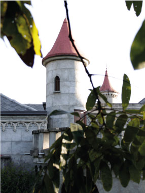

<html>
<head>
<meta charset="utf-8">
	<link rel="stylesheet" type="text/css" href="../estilos/estilosinternas.css">
	<link rel="shortcut icon" href="../favicon.jpg" />
	<link rel="stylesheet" type="text/css" href="../fonts/style.css">
	
	<title>Jardines</title>
</head>
<body>
	<div id="caja_superior">


<a href= "https://www.facebook.com" id="facebok"><span class="icon-facebook"></span></a>
<a href="https://www.twitter.com" id="twiter"><span class="icon-twitter-with-circle"></span></a>
<a href="https://www.plus.google.com" id="google"><span class="icon-google-with-circle"></span></a>
<a href="https://www.youtube.com" id="youtube"><span class="icon-youtube"></span></a>
</div>

</body>
</html>

<header>


</header>

<nav>

	<ul>
	<li><a href="../index.html" target="_new" id="home">Home <span class="icon-home"></span></a></li>
	<li><a href="../index.html" target="_new" id="home2"> <span class="icon-home"></span></a></li>

	<li><a href="../paginas/history.html" target="_new" id="historia">Historia<span class="icon-hour-glass"></span></a></li>
	<li><a href="../paginas/history.html" target="_new" id="historia2"><span class="icon-hour-glass"></span></a></li>

	<li><a href="../paginas/jardin.html" target="_new" id="jardines">Jardines<span class="icon-leaf"></span></a></li>
	<li><a href="../paginas/jardin.html" target="_new" id="jardines2"><span class="icon-leaf"></span></a></li>

	<li><a href="../paginas/tarantel.html" target="_new" id="tarantela">Tarantela<span class="icon-shop"></span></a></li>
	<li><a href="../paginas/tarantel.html" target="_new" id="tarantela2"><span class="icon-shop"></span></a></li>

	<li><a href="../paginas/actividad.html" target="_new" id="actividades">Actividades<span class="icon-hand"></span></a></li>
	<li><a href="../paginas/actividad.html" target="_new" id="actividades2"><span class="icon-hand"></span></a></li>

	<li><a href="../paginas/edito.html" target="_new" id="editorial">Editorial<span class="icon-pencil"></span></a></li>
	<li><a href="../paginas/edito.html" target="_new" id="editorial2"><span class="icon-pencil"></span></a></li>
	</ul>

	<input type="search" name="busqueda" id="busca">

	</nav>


 </img>
	<h1 id="titulo1"> JARDINES </h1>
	<p id="titulo2"> Del Mundo para Medellín</p>

	<section id="bannerudem"></section>

	<p id="parrafocel">
	MUSEO EL CASTILLO <br> <br>
	Más que un museo, un lugar histórico, la memoria colectiva hecha castillo, un legado de aquellos que hicieron ciudad con sus ideas, un gigante de la arquitectura, un referente de unión entre las familias antioqueñas y las que sin serlo parecían haber nacido bajo las mismas montañas, una conjución entre lo moderno y lo antiguo, entre lo nuevo y lo viejo, entre un hogar convertido museo y un museo que acoge como propios a quienes lo visitan.</p>


	<p id="parrafoprincipal"> Años atrás, para Doña Benedikta Zur, esposa de Don Diego Echavarría, y su hija Isolda Echavarría, el patio que hoy por hoy corresponde a los llamativos jardines del Museo El Castillo, era más que un simple patio trasero, era un lugar cálido lleno de amaneceres y testigo de un sin fin de historias que entre don Diego y sus invitados se contaban, invitados privilegiados que aunque atardecían en la hermosa ciudad de Medellín podían sentir que estaban al otro lado del mundo.</p>
	
	

	<div id="borde"></div>

	

	<div id="borde2"></div>

		 </img>

	<p id="parrafo_secundario"> Su ornamentación floral, sus fuentes de bronce y sus senderos adoquinados en piedra, son solo el resultado de un largo pero maravilloso trabajo en el que se involucraron personajes como el arquitecto Alberto Montes, la firma Caputi y Vieira, el escultor Humberto Tamayo Jaramillo y la experta en jardines Martha Cecilia Cardona, responsables de remodelar el jardín francés que años después de haberse abierto las puertas del museo, configuraba como parque principal del mismo. <br> </br> Considerado como una obra de enorme significación para la ciudad, dada la recuperación de un importante espacio verde y dada la atracción que sienten ciudadanos y turistas hacia ella, este es un excelente lugar para disfrutar de la naturaleza y una puerta de entrada para descubrir la historia que en medio de ella se oculta.<br> </br>Enormes jardines con temática francesa, tropical, japonesa y contemporánea, hacen parte de este pequeño pulmón citadino, además de un hermoso bosque nativo donde residen pequeñas especies animales protegidas y un Patio llamado Patio de las Azaleas, donde fuentes, faroles y varios mosaicos sevillanos nos remiten a las casas andaluzas, esas que hace años fusionaban la arquitectura del mundo romano con la arquitectura del mundo musulmán.</p>


	<div id="cajaroja1">
	<section id="banneraizon"></section>


<nav id="navinf">
	<ul>
	<li><a href="../index.html" target="_new" id="home">Home <span class="icon-home"></span></a></li>
	<li><a href="../paginas/history.html" target="_new" id="historia">Historia<span class="icon-hour-glass"></span></a></li>
	<li><a href="../paginas/jardin.html" target="_new" id="jardines">Jardines<span class="icon-leaf"></span></a></li>	
	<li><a href="../paginas/tarantel.html" target="_new" id="tarantela">Tarantela<span class="icon-shop"></span></a></li>
	<li><a href="../paginas/actividad.html" target="_new" id="actividades">Actividades<span class="icon-hand"></span></a></li>
	<li><a href="../paginas/edito.html" target="_new" id="editorial">Editorial<span class="icon-pencil"></span></a></li>
	</ul>
</div>

<section id="banneraizon2"></section>


	<input type="search" name="busqueda" id="busca2">

	<a href= "https://www.facebook.com" id="facebok2"><span class="icon-facebook"></span></a>
	<a href="https://www.twitter.com" id="twiter2"><span class="icon-twitter-with-circle"></span></a>
	<a href="https://www.plus.google.com" id="google2"><span class="icon-google-with-circle"></span></a>
	<a href="https://www.youtube.com" id="youtube2"><span class="icon-youtube"></span></a>


<div id="cajacafe"><footer> COPYRIGHT 2017 AIZOON SA. & CIA. </br>
TÉRMINOS Y CONDICIONES POLÍTICA DE PRIVACIDAD Y USO DE INFORMACIÓN PERSONAL SUPERINTENDENCIA DE INDUSTRIA Y COMERCIO</br>
NIT 890901353-2 DIRECCIÓN CARRERA 43 A N° 68 A SUR 30, SABANETA - ANTIOQUIA, COLOMBIA</br>
CONMUTADOR (57) (4) 5062470 BOGOTÁ (57) (1) 4156767 FAX (57) (1) 4157507 LÍNEA DE ATENCIÓN AL CLIENTE (57) (4) 2186547</footer></div>
<div id="cajaroja2"></div>
